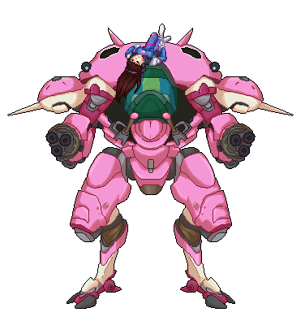
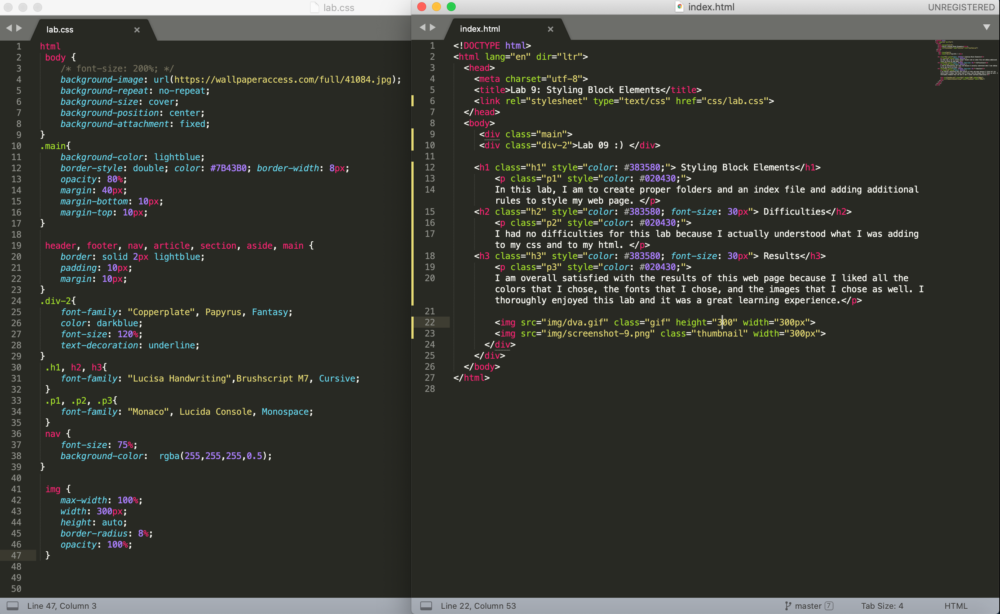

Lab 09 :)
Styling Block Elements
In this lab, I am to create proper folders and an index file and adding additional rules to style my web page.
Difficulties
I had no difficulties for this lab because I actually understood what I was adding to my css and to my html.
Results
I am overall satisfied with the results of this web page because I liked all the colors that I chose, the fonts that I chose, and the images that I chose as well. I thoroughly enjoyed this lab and it was a great learning experience.
 